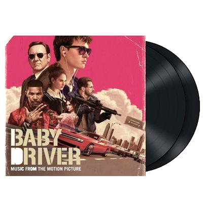

Story
Talented getaway driver Baby (Ansel Elgort) relies on the beat of his personal soundtrack to be the best in the game. After meeting the woman (Lily James) of his dreams, he sees a chance to ditch his shady lifestyle and make a clean break. Coerced into working for a crime boss (Kevin Spacey), Baby must face the music as a doomed heist threatens his life, love and freedom.Gallery


Trailer
Cast
|
Ansel Elgort
Jon Bernthal
Jon Hamm
|

Soundtrack
- Jon Spencer Blues Explosion Bellbottoms
- Bob and Earl Harlem Shuffle
- Jonathan Richman and The Modern Lovers Egyptian Reggae
- Googie Rene Smokey Joes La La
- The Beach Boys Lets Go Away For Awhile
- Carla Thomas B-A-B-Y
- Kashmere Stage Band Kashmere
- Dave Brubeck Unsquare Dance
- The Damned Neat Neat Neat
- The Commodores Easy (Single Version)
- T. Rex Debora